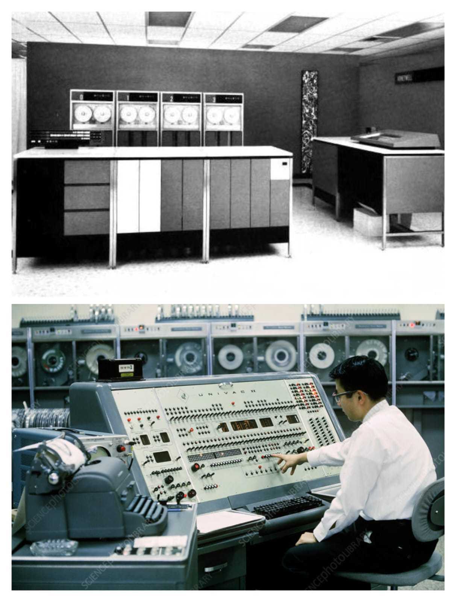
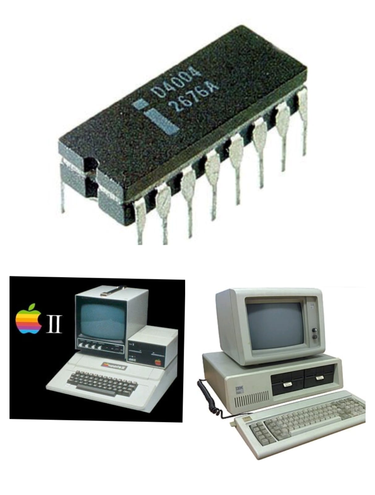
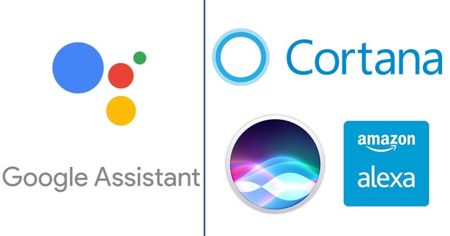

Esta generación (1940–1956) marcó el inicio de la computación moderna. Las máquinas usaban válvulas de vacío, ocupaban habitaciones enteras y consumían enormes cantidades de energía. Las operaciones eran lentas y la programación se realizaba en lenguaje máquina usando tarjetas perforadas.
Impacto: Primera solución a cálculos complejos y rápidos para su tiempo, especialmente en el ámbito militar.

Entre 1956 y 1963, los transistores reemplazaron a las válvulas. Esto permitió la construcción de equipos más pequeños, rápidos y eficientes, con menor consumo energético. Se empezaron a usar lenguajes de programación como COBOL y FORTRAN.
Impacto: Dio paso al software estructurado y facilitó el avance de la informática científica y empresarial.
De 1964 a 1971, la integración de transistores en un solo chip dio lugar a los circuitos integrados, reduciendo el tamaño de las computadoras y aumentando su velocidad y eficiencia. Surgieron los primeros sistemas operativos y se consolidó el software de propósito general.
Impacto: Democratización del acceso a la computación en grandes organizaciones y universidades.

Desde 1971 hasta la actualidad, la invención del microprocesador permitió integrar la CPU completa en un solo chip, como el Intel 4004. Esto originó la computación personal con la llegada de las PC, laptops y dispositivos móviles.
Impacto: Informática masificada en hogares y empresas; nacimiento de la era digital.
La era actual se caracteriza por la inteligencia artificial, el machine learning, big data y la computación en la nube. Las máquinas pueden aprender de grandes cantidades de datos y realizar tareas que antes solo podían hacer los humanos.
Impacto: Transformación de industrias completas: salud, transporte, educación y entretenimiento.
La próxima frontera tecnológica incluye la computación cuántica, que utiliza qubits para resolver problemas imposibles para los ordenadores clásicos. También se desarrollan interfaces cerebro-computadora, como Neuralink, que buscan fusionar mente y máquina.
Impacto: Potencial para revolucionar la seguridad informática, la medicina personalizada y la inteligencia artificial general (AGI).